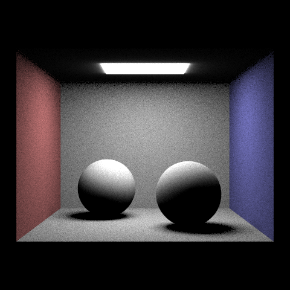
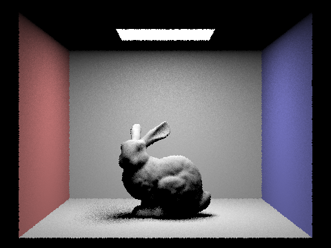
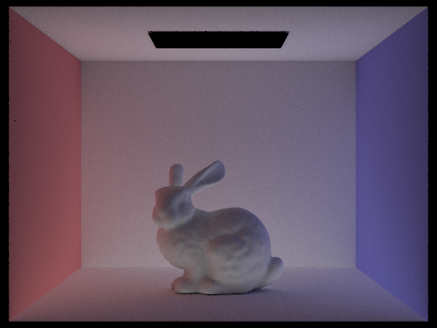

Overview
In this project, we implemented a raytracer step by step. In part 1, we implemented the basic generation of rays from camera and intersection of rays to triangle to sphere. The implementation in part 1 is enough to render the scene but is slow. In order to fix this problem, we need to implement BVH in order to accelerate the rendering process in part 2. In part 3, we start the process of ray tracing by doing a one bounce light on to the objects in the scene, and use important sampling to reduce the noise. In part 4, we implemented global illumination by recursively bouncing lights in the scene, using Russian roulette to prevent infinite recursion. In part 5, we further reduce noise by sampling less on pixels that converge faster.
Part 1: Ray Generation and Scene Intersection (20 Points)
Walk through the ray generation and primitive intersection parts of the rendering pipeline.
For ray generation, the camera needs to shoot a ray from the camera’s perspective and it needs to hit the virtual camera sensor in order to generate the image. In order to do that, the ray should be shoot out from the origin of the camera space and hits the perspective frame which is defined at the 3D vector ((-tan(hFov/2), -tan(vFov/2), -1)), (-tan(hFov/2), -tan(vFov/2), -1)), -1). Then, this ray should be transformed into the world space by multiplying the c2w matrix to the direction vector and the origin of the ray is just the position of the camera.
For sphere intersection, the equation of the ray and the sphere can be equalized to solve for t in the ray equation. This gives a quadratic equation because there are two possible hits on the sphere. Solving the quadratic equation gives the two points and the smaller t is the real answer because the smaller t indicates a closer hit.
Explain the triangle intersection algorithm you implemented in your own words.
The algorithm we implemented is the Möller–Trumbore algorithm which is similar to the barycentric coordinate method but faster since it uses less multiplication and addition. Since it gives the barycentric coordinate output in terms of b1 and b2, it is easy to detect hits by checking whether all three barycentric coordinates are all within 0 and 1.
Show images with normal shading for a few small .dae files.
|
|

|

|

|
Part 2: Bounding Volume Hierarchy (20 Points)
Walk through your BVH construction algorithm. Explain the heuristic you chose for picking the splitting point.
The algorithm constructs the BVH by first calculating the average midpoint of all the primitives in the list. Then, it uses a heuristic that runs through 3 iterations of calculation that calculates the surface area of the bounding box for each axis. For each axis, it sorts primitives based on the centroid of that primitive compared to the average midpoint of all primitives, then calculates the product of the size and the surface area of the resulting left and right bounding box. After finishing all 3 iterations, the heuristic picks the axis that minimizes the said product and uses that as the separating axis for the primitives.
The algorithm chooses this heuristic because it tries to find the axis that separates the most primitives from the other. For example, if adding an element greatly increases the surface area on one side of the tree, that means rays are more likely to pass through this bounding box and so when intersect happens it takes more time to call intersect on the children boxes of this bounding box. Therefore, minimizing the surface area is a good heuristic to minimize the possibility of ray hitting bounding boxes.
Show images with normal shading for a few large .dae files that you can only render with BVH acceleration.
|
|
|
Compare rendering times on a few scenes with moderately complex geometries with and without BVH acceleration. Present your results in a one-paragraph analysis.
|
|
Comparing the result of rendering with and without BVH, it can be seen that there is a great difference between the rendering time. With BVH on, the time to render reduces tremendously since none of the rendering time takes more than a second. Without BVH however, it takes longer and longer as the shape gets increasingly more complicated. Rendering the Lucy figure may take tens of minutes or even hours to complete without the BVH.
Part 3: Direct Illumination (20 Points)
Walk through both implementations of the direct lighting function.
Hemisphere Sampling
For the hemisphere sampling, we first created a ray going out from the current intersection point using Ray direct_ray(hit_p, o2w * sample), where sample is a vector randomly and evenly sampled from the hemisphereSampler with the probability of 1/2pi. If a mesh is encountered and its emission is not zero, the reflected radiance is added to the overall estimation using the equation:
if (bvh->intersect(nxt_r, &nxt_i) && cosTheta > 0) {
auto L = nxt_i.bsdf->get_emission();
L_out += L * f * cosTheta / pdf;
}
The average is calculated by dividing the total radiance by the number of samples and normalizing the result with the sampling probability.
Importance Sampling
(*it)->sample_L(hit_p, &wi_d, &dist, &pdf) generates ns_area_light number of emissions for each plane light source, together with its distance to the source, sampling probability, and direction vector. For each sample, a ray is generated to determine if the ray emitted from the current intersection point is obstructed by any item. The direct_ray.max_t of the ray is about equal to the distance to light. If there is no intersection, the emission from the light source is not obstructed by any object, and the reflected radiance may be added to the overall estimation using the formula.
if (!(bvh->intersect(nxt_r, &nxt_i)) && cosTheta > 0) {
L_tmp += L * isect.bsdf->f(w_out, wi_d) * cosTheta / pdf;
}
After looping over all light sources ns_area_light times, the total estimate is divided by ns_area_light to determine the mean. Because light source sampling is deterministic, when the light source is a point, a single intersection test is sufficient to determine if the light is obstructed by any item in between.
Compare the results between uniform hemisphere sampling and lighting sampling in a one-paragraph analysis.
If the light tracing parameters are the same, hemisphere sampling has a higher level of noise than light importance sampling. Compared to hemisphere sampling, light importance sampling generates rendering with clear shadows and a brighter appearance. With hemisphere sampling, rays emitting from initial intersection sites are equally sampled, therefore there are fewer rays pointing directly towards light sources. With light importance sampling, however, all rays always point toward light sources. Similar to hemisphere sampling, importance sampling produces a light or shadow gradient on rendered spheres due to the fact that the light source is a surface, and the rays are sampled at random. Some rays are blocked by the sphere's curvature, creating the gradient effect. In addition, when hemisphere sampling is employed, only a black image is rendered for items outside of the box.
Show some images rendered with both implementations of the direct lighting function.
| Uniform Hemisphere Sampling | Importance Sampling |
|---|---|

|

|
|

|

|
Focus on one particular scene with at least one area light and compare the noise levels in soft shadows when rendering with 1, 4, 16, and 64 light rays (the -l flag) and with 1 sample per pixel (the -s flag) using light sampling, not uniform hemisphere sampling.

|

|
|

|
|
When the amount of light rays rises, shadows become less dispersed and the transition from darkness to light becomes more gradual, leading to a reduced noise level. This also decreases the variation of light at each pixel and makes the sample mean closer to the actual mean. This is due to the fact that most of the light rays are from a plane source, and light rays are sampled randomly from the plane source. As the number of light rays increases, the average becomes a more accurate estimation of the amount of light blocked by the plane source. More transition colors are generated around the shadow’s edge.
Part 4: Global Illumination (20 Points)
Implementation of Indirect Light function
A ray is formed in at_least_one_bounce_radiance() using r in(hit_p, o2w * w_in), where hit_p is the current intersection point and w_in is the outward direction vector sampled from isect.bsdf->sample_f(). If the current ray depth has not reached the maximum ray depth, the function one_bound_radiance() returns one bound radiance at the current intersection point (). Next, if the new ray meets a new surface and Russian Roulette is not ended, the at_least_one_bound_radiance() function is carried out recursively with the new ray as the input.
auto L = at_least_one_bounce_radiance(nxt_r, nxt_i);
L_out += L * f * cosTheta / pdf / cdf; where L_out is the sum of the radiation.
The depth is decreased by one, whenever at_least_one_bounce_radiance is called, and the recursion ends when depth reaches 0 or when the generated Russian roulette probability is higher than the continuation probability 0.70. Lastly, the total radiance displayed is the sum of at_least_one_bounce_radiance and zero_bound_radiance.
Show some images rendered with global (direct and indirect) illumination. Use 1024 samples per pixel.
|
|
|
Pick one scene and compare rendered views first with only direct illumination, then only indirect illumination. Use 1024 samples per pixel. (You will have to edit PathTracer::at_least_one_bounce_radiance(...) in your code to generate these views.)

|

|
For Direct Illumination, it consists of the zeroth and first bounces. It is identical to the image produced by the direct illumination section. The direct illumination is brighter, and it is evident that if a surface is not facing the source of light, it is completely dark. On the other hand, indirect illumination, the first two bounces are absent, but there might be other bounces. There is light everywhere other than the light source. Additionally, in the image of indirect illumination, the colors from the red and blue walls are reflected onto the spheres, resulting in a little amount of red and blue on the spheres, which is not the case in the image of direct illumination.
For CBbunny.dae, compare rendered views with max_ray_depth set to 0, 1, 2, 3, and 100 (the -m flag). Use 1024 samples per pixel.
|
|

|

|

|

|
The scene becomes brighter more realistic, when the light has bounced at least three times. As the maximum depth grows, the colors from the two walls are reflected more in other areas of the scene. From the images, we can see that bunny’s tail is bluer, whereas the bunny’s head is more red. However, the difference between depth=4 and depth=100 is not significant.
Pick one scene and compare rendered views with various sample-per-pixel rates, including at least 1, 2, 4, 8, 16, 64, and 1024. Use 4 light rays.

|

|

|

|

|

|

|
When the sample per pixel rate is low, the level of noise is high. When s equals 1, 2, or 4, we can see that the pixels of the bunny have an abundance of random red and blue hues. This is because there are insufficient samples to calculate accurate mean values. When the number of samples per pixel increases, the noise decreases. A benefit of utilizing Monte Carlo to estimate a scene is that even when the sample per pixel is small, the expected picture is still the actual image.
Part 5: Adaptive Sampling (20 Points)
Explain adaptive sampling. Walk through your implementation of the adaptive sampling.
Adaptive sampling is a technique used to optimize the rendering process by assigning more resources to regions that demand a greater degree of detail and fewer resources to parts that are less vital or less complicated. The implementation is as follows.
For each sample:
1. We get the illuminance by calling the function radiance.illum() and update s1 and s2, where
2. We check if we reach the samplesPerBatch and calculate the mean and variance.
3. When the I value is less than or equal to the maxTolerance* mu, the iteration is terminated.
When the iteration is terminated, we will calculate the average radiance estimation and add it the sampleBuffer, and the current iteration number will also be stored in sampleCountBuffer.
Pick two scenes and render them with at least 2048 samples per pixel. Show a good sampling rate image with clearly visible differences in sampling rate over various regions and pixels. Include both your sample rate image, which shows your how your adaptive sampling changes depending on which part of the image you are rendering, and your noise-free rendered result. Use 1 sample per light and at least 5 for max ray depth.
|
|

|
|
|
|